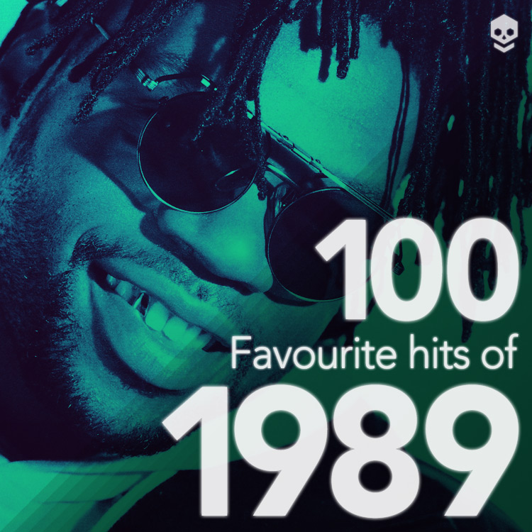
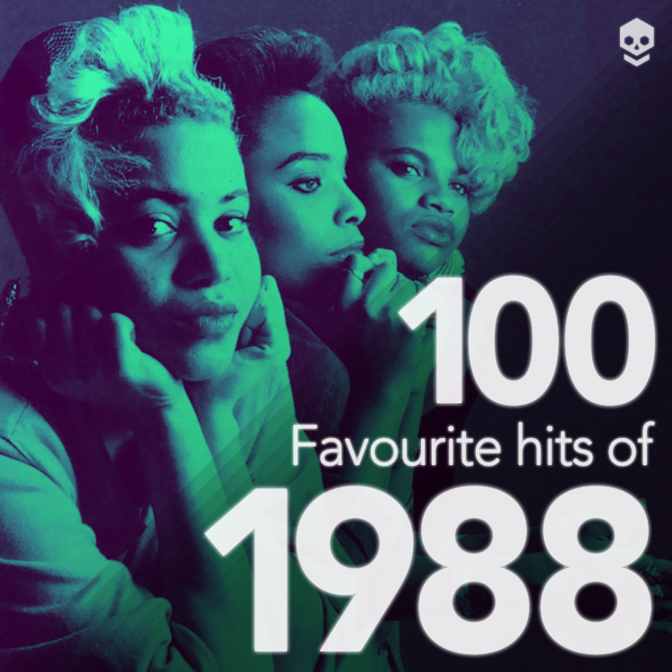
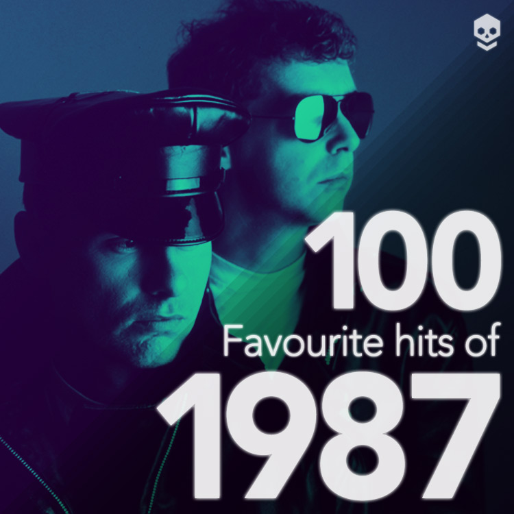
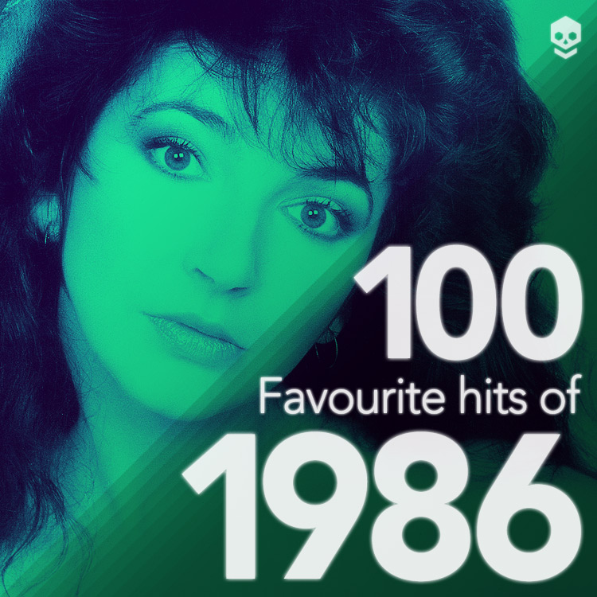
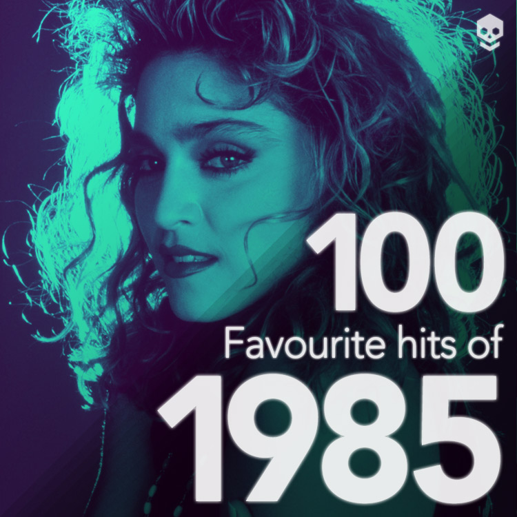
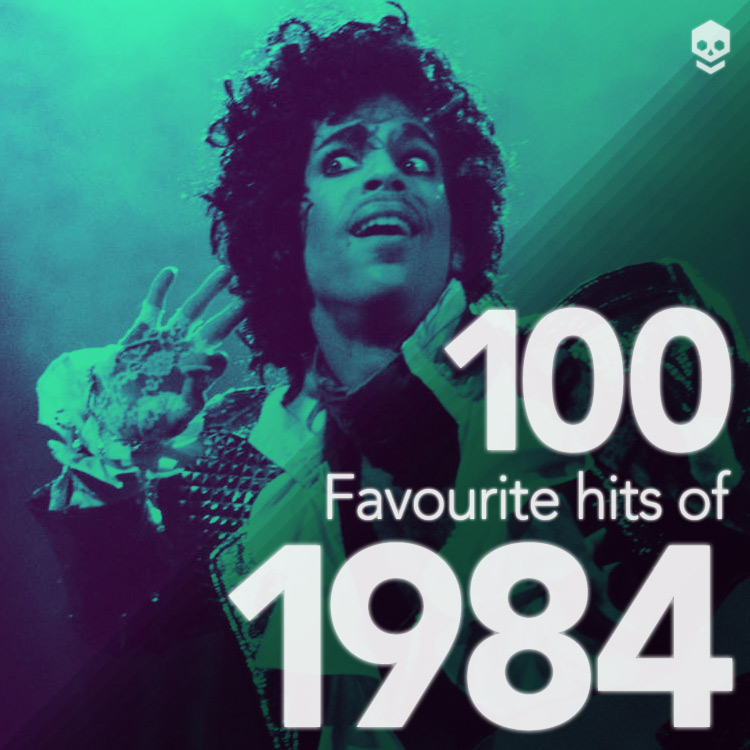
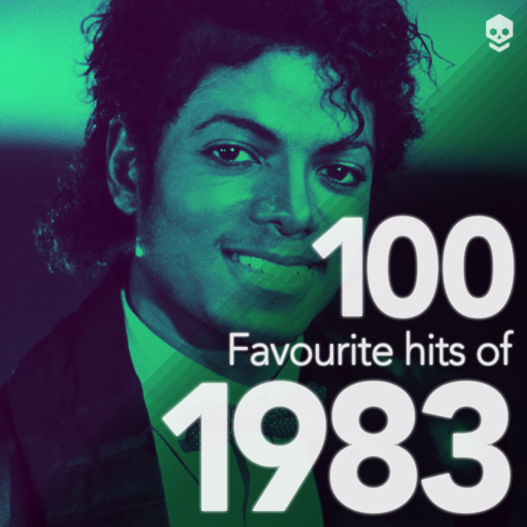
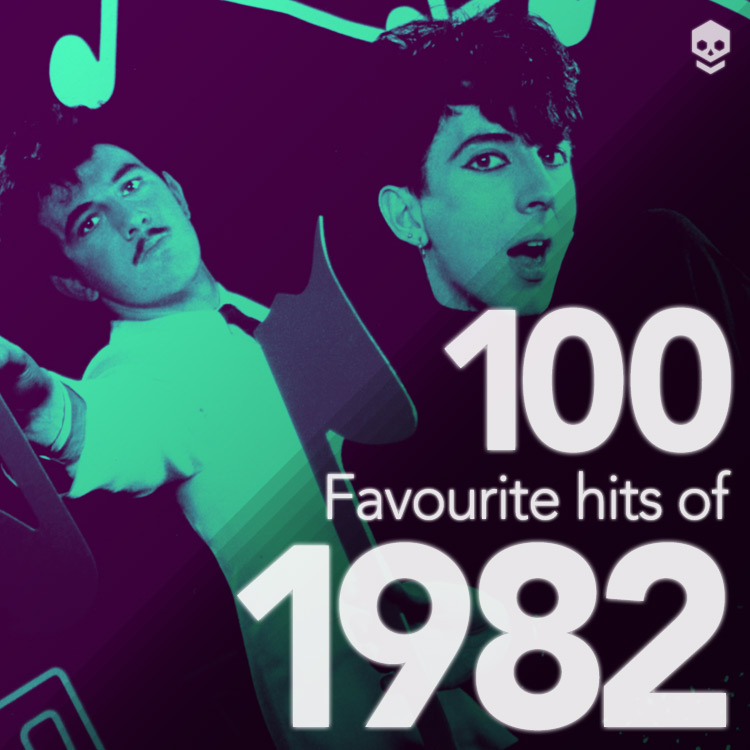
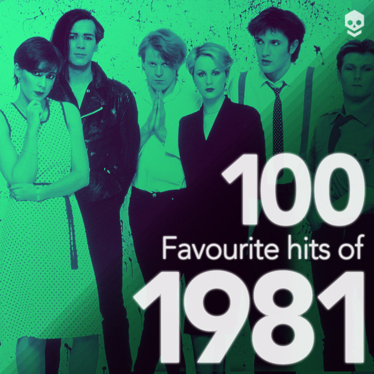
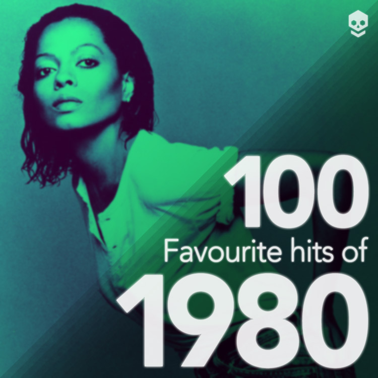

* Tracks with asterisks appeared on EP (Extended Play) single releases. Only tracks released between January 1980 and December 1989 are eligible. Playlists are in descending order (100-1) but not all tracks listed may be playable in the playlists.
An ultimate ranking of favourite tracks across the four categories (with some tracks eligible for more than one category). Arrows indicate changes in position from the previous ranking or newly added tracks. Stars mark tracks ranked first in a year or category list.
-
 Party Fears Two
Party Fears TwoThe Associates
1982HIT SINGLE -
 West End Girls
West End GirlsPet Shop Boys
1985HIT SINGLE -
 Purple Rain
Purple RainPrince & The Revolution
1984HIT SINGLE -
 When Doves Cry
When Doves CryPrince
1984HIT SINGLE -
 E2-E4
E2-E4Manuel Göttsching
1984INSTRUMENTAL -
 Pacific
Pacific808 State
1989HIT SINGLEINSTRUMENTAL -
 Upside Down
Upside DownDiana Ross
1980HIT SINGLE -
 Tears
TearsFrankie Knuckles, Satishii Tomie, Robert Owens
1989NON-HIT SINGLE -
 Once In A Lifetime
Once In A LifetimeTalking Heads
1981HIT SINGLE -
 Hello Earth
Hello EarthKate Bush
1985NON-SINGLE -
 King's Cross
King's CrossPet Shop Boys
1987NON-SINGLE -
 Cloudbusting
CloudbustingKate Bush
1985HIT SINGLE -
 Two Divided By Zero
Two Divided By ZeroPet Shop Boys
1986NON-SINGLE -
 Moved up from position 17 to 14.Theme For Great Cities
Moved up from position 17 to 14.Theme For Great CitiesSimple Minds
1981INSTRUMENTAL -
 Moved down from position 14 to 15.Stop
Moved down from position 14 to 15.StopCasco presents B.W.H.
1983NON-HIT SINGLEINSTRUMENTAL -
 Moved down from position 15 to 16.Pump Up The Volume
Moved down from position 15 to 16.Pump Up The VolumeM|A|R|R|S
1987HIT SINGLE -
 Moved down from position 16 to 17.Clear - Jose 'Animal' Diaz Remix
Moved down from position 16 to 17.Clear - Jose 'Animal' Diaz RemixCybotron
1983NON-HIT SINGLE -
 Moved up from position 21 to 18.Ashes To Ashes
Moved up from position 21 to 18.Ashes To AshesDavid Bowie
1980HIT SINGLE -
 Moved down from position 18 to 19.I Travel
Moved down from position 18 to 19.I TravelSimple Minds
1980NON-HIT SINGLE -
 Moved up from position 27 to 20.Duel
Moved up from position 27 to 20.DuelPropaganda
1985HIT SINGLE -
 Moved up from position 28 to 21.Dr. Mabuse
Moved up from position 28 to 21.Dr. MabusePropaganda
1984HIT SINGLE -
 Moved up from position 23 to 22.Get Out Of My House
Moved up from position 23 to 22.Get Out Of My HouseKate Bush
1982NON-SINGLE -
 Moved up from position 30 to 23.Born Under Punches (The Heat Goes On)
Moved up from position 30 to 23.Born Under Punches (The Heat Goes On)Talking Heads
1980NON-SINGLE -
 Moved down from position 20 to 24.Voodoo Ray
Moved down from position 20 to 24.Voodoo RayA Guy Called Gerald
1989HIT SINGLEINSTRUMENTAL -
 Moved up from position 36 to 25.Kiss
Moved up from position 36 to 25.KissPrince
1986HIT SINGLE -
 Moved down from position 25 to 26.Push It
Moved down from position 25 to 26.Push ItSalt-N-Pepa
1988HIT SINGLE -
 Moved down from position 19 to 27.Let The Music Use You
Moved down from position 19 to 27.Let The Music Use YouThe Nightwriters
1987NON-HIT SINGLE -
 Moved down from position 26 to 28.Bizarre Love Triangle
Moved down from position 26 to 28.Bizarre Love TriangleNew Order
1986NON-HIT SINGLE -
Moved up from position 33 to 29.Never Let Me Down Again
Depeche Mode
1987HIT SINGLE -
Moved up from position 32 to 30.Let Me Go
Heaven 17
1982NON-HIT SINGLE -
Why?
Carly Simon
1982HIT SINGLE -
Moved up from position 37 to 32.Take A Chance
Mr. Flagio
1983NON-HIT SINGLE -
Moved up from position 38 to 33.Faces
Clio
1985NON-HIT SINGLE -
Moved up from position 39 to 34.Your Love
Jamie Principle, Frankie Knuckles
1987NON-HIT SINGLE -
Moved up from position 40 to 35.A Love From Outer Space
A.R. Kane
1989NON-SINGLE -
 Moved down from position 22 to 36.Billie Jean
Moved down from position 22 to 36.Billie JeanMichael Jackson
1983HIT SINGLE -
Moved up from position 55 to 37.Let's Dance
David Bowie
1983HIT SINGLE -
Moved up from position 54 to 38.Back To Life (However Do You Want Me)
Soul II Soul
1989HIT SINGLE -
Moved up from position 46 to 39.Left To My Own Devices
Pet Shop Boys
1988HIT SINGLE -
Moved down from position 34 to 40.True Faith
New Order
1987HIT SINGLE -
Moved down from position 35 to 41.Blue Monday
New Order
1983HIT SINGLE -
Moved down from position 41 to 42.That's Us/Wild Combination
Arthur Russell
1988NON-SINGLE -
Newly added.Can't Be Sure
The Sundays
1989NON-HIT SINGLE -
Moved up from position 99 to 44.Spellbound
Siouxsie & The Banshees
1981HIT SINGLE -
Newly added.Southern Freeez
Freeez
1981HIT SINGLE -
Newly added.Rapture
Blondie
1980HIT SINGLE -
Moved down from position 45 to 47.Everywhere
Fleetwood Mac
1988HIT SINGLE -
Moved up from position 57 to 48.Close (To The Edit)
The Art Of Noise
1984HIT SINGLEINSTRUMENTAL -
Moved up from position 88 to 49.What Have I Done To Deserve This?
Pet Shop Boys, Dusty Springfield
1987HIT SINGLE -
 Newly added.Just Be Good To Me
Newly added.Just Be Good To MeThe S.O.S Band
1984HIT SINGLE -
Moved up from position 52 to 51.Hangin' On A String (Contemplating)
Loose Ends
1985HIT SINGLE -
Moved down from position 24 to 52.Hounds Of Love
Kate Bush
1986HIT SINGLE -
Moved down from position 43 to 53.Point Of No Return
Nu Shooz
1986NON-HIT SINGLE -
Moved up from position 100 to 54.I Feel For You
Chaka Khan
1984HIT SINGLE -
Newly added.Like A Prayer
Madonna
1989HIT SINGLE -
Newly added.Fade To Grey
Visage
1980HIT SINGLE -
Newly added.Starchild
Level 42
1981NON-HIT SINGLE -
Newly added.Genius Of Love
Tom Tom Club
1981NON-HIT SINGLE -
Moved down from position 42 to 59.The Art Of Parties
Japan
1981NON-HIT SINGLE -
Moved down from position 51 to 60.Can You Feel It?
Mr. Fingers
1986INSTRUMENTAL -
Moved up from position 94 to 61.Hip Hop Be Bop (Don’t Stop)
Man Parrish
1983INSTRUMENTALNON-HIT SINGLE -
Moved down from position 47 to 62.Just Fascination
Cabaret Voltaire
1983NON-HIT SINGLE -
Moved up from position 71 to 63.Torch
Soft Cell
1982HIT SINGLE -
Newly added.Forget Me Nots
Patrice Rushen
1982HIT SINGLE -
Newly added.A Night To Remember
Shalamar
1982HIT SINGLE -
 Moved down from position 29 to 66.Snobbery And Decay
Moved down from position 29 to 66.Snobbery And DecayAct
1987NON-HIT SINGLE -
Moved down from position 48 to 67.The Chase
Propaganda
1985NON-SINGLE -
Moved down from position 49 to 68.P:Machinery
Propaganda
1985NON-HIT SINGLE -
Moved down from position 61 to 69.Pili Pili
Jasper van't Hofs Pili Pili
1984INSTRUMENTAL -
Newly added.Elstree
Buggles
1980NON-HIT SINGLE -
Moved down from position 58 to 71.Johnny And Mary
Robert Palmer
1980NON-HIT SINGLE -
Moved down from position 53 to 72.Mutual Attraction
Change
1985NON-HIT SINGLE -
Newly added.Fight The Power
Public Enemy
1989HIT SINGLE -
Moved down from position 62 to 74.W.F.L.
Happy Mondays
1989NON-HIT SINGLE -
Moved down from position 50 to 75.Can't Be Serious
Ginny
1985NON-HIT SINGLE -
Moved down from position 44 to 76.Pop Life
Prince
1985NON-HIT SINGLE -
Moved down from position 56 to 77.Ti Sento
Matiz Bazar
1985NON-HIT SINGLE -
Moved down from position 65 to 78.The Dance No. 2
Laraaji, Brian Eno
1980INSTRUMENTAL -
Moved down from position 70 to 79.The Official Colourbox World Cup Theme
Colourbox
1986INSTRUMENTAL -
Moved down from position 59 to 80.Is That All There Is?
Cristina
1980NON-HIT SINGLE -
Moved down from position 60 to 81.Things Fall Apart
Cristina
1981NON-HIT SINGLE -
Moved down from position 66 to 82.Another Day
This Mortal Coil
1984NON-SINGLE -
Moved down from position 67 to 83.How To Bring A Blush To The Snow
Cocteau Twins
1986NON-SINGLE -
Moved down from position 68 to 84.The Spangle Maker
Cocteau Twins
1984NON-SINGLE -
Moved down from position 69 to 85.Waterfall
The Stone Roses
1989 (1992 single)NON-SINGLE -
Moved down from position 75 to 86.Desert Song
Kissing The Pink
1983NON-SINGLE -
Moved down from position 76 to 87.Everything Counts
Depeche Mode
1983HIT SINGLE -
Newly added.Relax
Frankie Goes To Hollywood
1983HIT SINGLE -
Moved down from position 78 to 89.The Chauffeur
Duran Duran
1982NON-SINGLE -
Moved down from position 79 to 90.Sacred Heart
Orchestral Manoeuvres In The Dark
1981NON-SINGLE -
Moved down from position 72 to 91.Say Hello Wave Goodbye
Soft Cell
1982HIT SINGLE -
Moved down from position 80 to 92.Somebody To Love Tonight
Patrick Cowley
1980INSTRUMENTAL -
Moved down from position 89 to 93.R-Theme
R Tyme
1989INSTRUMENTAL -
Moved down from position 90 to 94.Strings Of Life
Rhythim Is Rhythim
1987INSTRUMENTAL -
Moved down from position 84 to 95.Passion
The Flirts
1982NON-HIT SINGLE -
Moved down from position 73 to 96.Straight Outta Compton
N.W.A.
1988NON-SINGLE -
Moved down from position 85 to 97.Bam Bam
Sister Nancy
1982NON-SINGLE -
Moved down from position 92 to 98.Happiness Is Easy
Talk Talk
1986NON-SINGLE -
Moved down from position 63 to 99.Hit The North (Part 1)
The Fall
1987NON-HIT SINGLE -
Moved down from position 93 to 100.Budapest By Blimp
Thomas Dolby
1988NON-SINGLE -
 Moved down from position 96 to 101.Glad To Know You
Moved down from position 96 to 101.Glad To Know YouKitty Grant
1983NON-HIT SINGLE
These lists were compiled between 2017 and 2021 with some small alterations since then. Stars mark tracks ranked first in a year or category list.
Instrumentals
To be eligible the track must not contain significant non-repeating vocals. Instrumentals eligible here but that also entered the UK Top 40 chart (by 808 State, MARRS, A Guy Called Gerald, The Art Of Noise and Starlight) instead appear in the equivalent Hits list.
Open in Apple Music Open in Spotify- E2-E4Manuel Göttsching
- Theme For Great CitiesSimple Minds
- Can You Feel It?Mr. Fingers
- Hip Hop Be Bop (Don't Stop)Man ParrishMoved up from position 15 to 4.
- Pili PiliJasper van't Hofs Pili PiliMoved down from position 4 to 5.
- The Dance No. 2Laraaji, Brian EnoMoved down from position 5 to 6.
- The Official Colourbox World Cup ThemeColourboxMoved down from position 6 to 7.
- Somebody to Love TonightPatrick CowleyMoved up from position 9 to 8.
- R-ThemeR TymeMoved up from position 12 to 9.
- Strings Of LifeRhythim Is RhythimMoved up from position 13 to 10.
- Moments In LoveThe Art Of NoiseMoved down from position 7 to 11.
- TwilightMaze, Frankie BeverleyMoved up from position 26 to 12.
- Al-Naafyish (The Soul)HashimMoved up from position 14 to 13.
- The Imperial March (Darth Vader's Theme)John WilliamsMoved down from position 8 to 14.
- StarsMr. FingersMoved down from position 11 to 15.
- Sea HuntPatrick CowleyMoved down from position 10 to 16.
- The Jezebel SpiritBrian Eno & David ByrneMoved up from position 24 to 17.
- The Phantom (It's In There)Renegade SoundwaveMoved down from position 16 to 18.
- Dead Eyes OpenedSevered HeadsMoved down from position 17 to 19.
- ElegiaNew OrderMoved down from position 18 to 20.
- Rachel's SongVangelisMoved down from position 19 to 21.
- As Falls Wichita, So Falls Wichita FallsPat Metheny
- PimpfDepeche Mode
- TollkühnMoebius & Conny PlankMoved up from position 25 to 24.
- Sunrise808 StateMoved up from position 27 to 25.
- Beyond The DanceRhythim Is RhythimMoved up from position 29 to 26.
- Nude PhotoRhythim Is RhythimMoved up from position 30 to 27.
- Acid TracksPhutureMoved up from position 31 to 28.
- Knight RiderStu Philips & Glen LarsonMoved up from position 32 to 29.
- When Your Dream Of Perfect Beauty Comes TrueBill NelsonMoved up from position 33 to 30.
- MastershipStarship Commander Wooooo WoooooMoved up from position 34 to 31.
- Albinoni vs Star Wars (Part 1)Sigue Sigue SputnikMoved up from position 35 to 32.
- Musique Non StopKraftwerkMoved up from position 36 to 33.
- RockitHerbie HancockMoved up from position 37 to 34.
- WaltzinblackThe StranglersMoved up from position 38 to 35.
- ForeshadowedHarold Budd & Brian EnoMoved down from position 20 to 36.
- Cantus In Memory Of Benjamin BrittenArvo PärtMoved down from position 21 to 37.
- The Sheltering SkyKing CrimsonMoved up from position 39 to 38.
- PharaohsTears For FearsMoved up from position 40 to 39.
- An Ending (Ascent)Brian EnoMoved up from position 42 to 40.
- ZaarPeter GabrielMoved up from position 43 to 41.
- Hana Gai SaitaraMariahMoved up from position 44 to 42.
- MadeleineThe Durutti ColumnMoved up from position 45 to 43.
- Novelas Das NoveWally BadarouMoved up from position 46 to 44.
- Gee StreetStereo MCsMoved up from position 47 to 45.
- Papa's Got a Brand New PigbagPigbagMoved up from position 77 to 46.
- Blue GreenYelloMoved up from position 48 to 47.
- Sunday Afternoon in the ParkVan HalenMoved up from position 49 to 48.
- Architecture And MoralityOrchestral Manoeuvres In The DarkMoved up from position 50 to 49.
- 66 And FadingOrchestral Manoeuvres In The DarkMoved up from position 51 to 50.
- EmphasisHarold GrosskopfMoved up from position 52 to 51.
- Light In DarknessYellow Magic OrchestraMoved down from position 28 to 52.
- ZoolookJean-Michel Jarre
- SoSoft Cell
- An Even Whiter CarThe Associates
- The Boiler (Main Theme)The Specials, Rhoda
- The Cool OutThe Clash
- U.F.O.E.S.G.
- DisappearingMaterial
- Open in UpChic
- Subway ThemeGrand Wizard Theodore
- Death DiscoArbeid Adelt!
- PaybackJan Hammer
- Crockett's ThemeJan Hammer
- SiriusThe Alan Parsons Project
- Flying Theme (From 'E.T. The Extra-Terrestrial')John Williams, London Symphony OrchestraMoved down from position 41 to 66.
- Love On A Real TrainTangerine Dream
- Pitch ControlMoebius Plank Neumeier
- TenebreClaudio Simonetti
- Beat DisBomb The BassMoved up from position 76 to 70.
- Jackin' The TraxFarley Jackmaster Funk
- ShadowsFingers Inc.
- Burnin' UpImagination
- Take Me HigherVirgo
- The Jack That House BuiltJack 'N' Chill
- Salsa HouseRichie RichMoved down from position 70 to 76.
- Matt's MoodMatt BiancoMoved up from position 80 to 77.
- Work That SkirtThe B-52's
- Aeo 2Brian Briggs
- Jamaica RunningThe PoolMoved up from position 81 to 80.
- LegbaMalcolm McLarenMoved up from position 82 to 81.
- The Big DigFamily FodderMoved up from position 83 to 82.
- SwingtimeWooMoved up from position 84 to 83.
- TaraRoxy MusicMoved up from position 85 to 84.
- Siempre Hay EsperanzaSadeMoved up from position 86 to 85.
- Blow Your Own HornHerb AlpertMoved up from position 87 to 86.
- Island SunriseSoftwareMoved up from position 88 to 87.
- Rain (I Want A Divorce)Ryuichi SakamotoMoved up from position 89 to 88.
- Merry Christmas Mr. LawrenceRyuichi SakamotoMoved up from position 90 to 89.
- SaudadeLove And RocketsMoved up from position 91 to 90.
- The Gates Of Ancient CitiesChris & CoseyMoved up from position 92 to 91.
- Scarlet PimpernelBlack SabbathMoved up from position 93 to 92.
- FytThis Mortal CoilMoved up from position 94 to 93.
- LovingPropagandaMoved down from position 66 to 94.
- Jean Walks In Fresh FieldsChina Crisis
- Ribbed and VeinedCocteau Twins
- CinemaYes
- The Quarterdrawing Of The DogSiouxsie & The Banshees
- CacharpayaIncantation
- EscapeMichael Garrison
Non-Singles
To be eligible the track must not have been released as an 'A' side single (unless the album version is significantly longer) in the UK (Source: Discogs.com).
Open in Apple Music Open in Spotify- Hello EarthKate Bush
- King's CrossPet Shop Boys
- Two Divided by ZeroPet Shop Boys
- Get Out Of My HouseKate Bush
- Born Under Punches (The Heat Goes On)Talking Heads
- A Love From Outer SpaceA.R. Kane
- That's Us/Wild CombinationArthur Russell
- The ChasePropaganda
- Another DayThis Mortal Coil
- How To Bring A Blush To The SnowCocteau Twins
- The Spangle MakerCocteau Twins
- WaterfallThe Stone Roses
- Desert SongKissing The PinkMoved up from position 14 to 13.
- The ChauffeurDuran DuranMoved up from position 15 to 14.
- Sacred HeartOrchestral Manoeuvres In The DarkMoved up from position 16 to 15.
- Straight Outta ComptonN.W.A.Moved down from position 13 to 16.
- Bam BamSister Nancy
- Happiness Is EasyTalk TalkMoved up from position 20 to 18.
- Budapest By BlimpThomas DolbyMoved up from position 21 to 19.
- SokokaraMariahMoved down from position 18 to 20.
- GiantThe TheMoved down from position 19 to 21.
- Sometimes It Snows In AprilPrince
- Erotic CityPrince
- Sage Comme Une mageLio
- Feel UpGrace Jones
- Stand on the Word (1982 Version)The Joubert Singers
- Is It All Over My Face?Loose Joints
- Do It BetterHappy Mondays
- SecondsThe Human League
- Lamborghini (Petrol, April 1982)Severed Heads
- All Saints DaySevered Heads
- Magical Dream808 State
- In The NightPet Shop Boys
- Your Silent FaceNew Order
- It's More Fun to ComputeKraftwerk
- I Know What Boys LikeThe Waitresses
- Starfish and CoffeePrince
- Pretty BabySister Sledge
- Human NatureMichael Jackson
- You Can't Turn Me AwaySylvia Striplin
- Underwater BoyVirna Lindt
- The Same Deep Water As YouThe Cure
- StormRare Silk
- Something In The Water (Does Not Compute)Prince
- Hand To MouthGeorge Michael
- Diamonds, Fur Coat, ChampagneSuicide
- The VisitorsABBA
- Blame It On DiscoCristina
- Looking Down The Barrel Of A GunBeastie Boys
- Tread WaterDe La Soul
- Wax The VanArthur Russell
- KaddishGina X Performance
- EdenTalk Talk
- All Cats Are GreyThe Cure
- DeliusKate Bush
- The Age Of SelfRobert Wyatt
- The Black Hit Of SpaceThe Human League
- Hard Rain - RemixBronski Beat
- Time, Space, TransmatModel 500
- 1963New Order
- Far Too HardDead Or Alive
- I Cry (Night After Night)The Egyptian Lover
- NarcissiqueCaroline Loeb
- Oh YeahYello
- Love SongMadonna
- ZanzibarHelen
- Zoot KookSandii
- I'm Not MovingPhil Collins
- Where Was Your Heart (When You Needed It Most)Soft Cell
- Mr. Bad GuyFreddie Mercury
- EuropaBlondie
- Finding The SeaThe Durutti Column
- The Missing BoyThe Durutti Column
- Into The LightSiouxsie & The Banshees
- Shadows from NowhereBlue Gas
- FishThrowing Muses
- Punk It UpMalcolm McLaren
- CavernLiquid Liquid
- MediateINXS
- Say You'll Say SoGeoffrey Landers
- The Gates Of Door To DoorChina Crisis
- MasqueradeSwing Out Sister
- LowdownScribble
- MagicMick Smiley
- Macho CitySteve Miller Band
- It's No Game (Part 1)David Bowie
- Too Much BloodThe Rolling Stones
- Bustin' OutMaterial, Nona Hendryx
- Hard-Boiled BabeLizzy Mercier Descloux
- Make It Last ForeverInner Life
- Release The BeastBreakwater
- Children's StorySlick Rick
- Black Steel In The Hour Of ChaosPublic Enemy
- The New Rap LanguageSpoonie Gee & The Treacherous Three
- Evidently ChickentownJohn Cooper Clarke
- Quicksand LoversCristina
- Wax And WaneCocteau Twins
- The Landscape Is ChangingDepeche Mode
- The Working HourTears For Fears
- CrushOrchestral Manoeuvres In The Dark
Non-Hits
To be eligible the track must have been an A-side, B-side or EP track released in the UK that failed to enter the Top 40 singles chart.
Open in Apple Music Open in Spotify- TearsFrankie Knuckles, Satoshi Tomiie, Robert Owens
- StopCasco Presents BWH
- Clear - Jose 'Animal' Diaz RemixCybotron
- I TravelSimple Minds
- Let The Music Use YouThe Nightwriters
- Bizarre Love TriangleNew Order
- Let Me GoHeaven 17
- Take A ChanceMr. FlagioMoved up from position 9 to 8.
- FacesClioMoved up from position 10 to 9.
- Your LoveFrankie Knuckles, Jamie PrincipleMoved up from position 11 to 10.
- Can't Be SureThe SundaysMoved up from position 37 to 11.
- Point Of No ReturnNu ShoozMoved up from position 13 to 12.
- StarchildLevel 42Moved up from position 78 to 13.
- Genius Of LoveTom Tom ClubMoved up from position 83 to 14.
- The Art Of PartiesJapanMoved down from position 12 to 15.
- Just FascinationCabaret VoltaireMoved down from position 15 to 16.
- Snobbery And DecayActMoved down from position 8 to 17.
- P:MachineryPropagandaMoved down from position 16 to 18.
- ElstreeBugglesMoved up from position 35 to 19.
- Johnny And MaryRobert Palmer
- Mutual AttractionChangeMoved down from position 18 to 21.
- W.F.L.Happy MondaysMoved up from position 23 to 22.
- Can't Be SeriousGinnyMoved down from position 17 to 23.
- Pop LifePrinceMoved down from position 14 to 24.
- Ti Sento (Extended Version)Matia BazarMoved down from position 19 to 25.
- Is That All There Is?CristinaMoved down from position 21 to 26.
- Things Fall ApartCristinaMoved down from position 22 to 27.
- PassionThe FlirtsMoved down from position 26 to 28.
- Hit the North (Part 1)The FallMoved down from position 24 to 29.
- Glad To Know YouKitty GrantMoved down from position 27 to 30.
- I Would Die 4 U*Prince & The RevolutionNewly added.
- Wheel Me Out (Long Version)Was (Not Was)Moved down from position 28 to 32.
- Heat You Up, Melt You DownShirley LitesMoved down from position 29 to 33.
- The DreamingKate BushMoved up from position 81 to 34.
- The Perfect KissNew OrderMoved down from position 25 to 35.
- Other Side Of LifeVisionsMoved down from position 31 to 36.
- Everything Starts With An 'E'E-Zee PosseeMoved down from position 32 to 37.
- Promised LandJoe SmoothMoved down from position 30 to 38.
- Walk Out To WinterAztec CameraMoved up from position 71 to 39.
- GoldrushYelloMoved down from position 34 to 40.
- Faron YoungPrefab SproutMoved down from position 36 to 41.
- The 'Sweetest Girl'Scritti PolittiMoved down from position 38 to 42.
- Song To The SirenThis Mortal CoilMoved down from position 41 to 43.
- BirthdayThe SugarcubesMoved down from position 40 to 44.
- Jam On Revenge (The Wikki Wikki Song)NewcleusMoved down from position 33 to 45.
- JosephineChris ReaMoved up from position 61 to 46.
- SlowdiveSiouxsie & The BansheesMoved down from position 43 to 47.
- HomosapienPete ShelleyMoved down from position 44 to 48.
- XOYOThe PassageMoved down from position 45 to 49.
- I'm So BeautifulDivineMoved down from position 46 to 50.
- It's A WarKanoMoved down from position 47 to 51.
- Haven't You Heard?Patrice RushenMoved down from position 48 to 52.
- What You Won't Do For LoveMichael Boothman, Charmaine FordeMoved down from position 49 to 53.
- This Must Be the Place (Naive Melody)Talking HeadsMoved down from position 50 to 54.
- TV SceneLinda Di FrancoMoved down from position 51 to 55.
- Just TalkAC MariasMoved down from position 52 to 56.
- Primitive PaintersFelt, Liz FraserMoved down from position 53 to 57.
- Radio Free EuropeR.E.M.Moved down from position 54 to 58.
- Deep SleepThe B-52'sMoved down from position 55 to 59.
- Living in Another WorldTalk TalkMoved down from position 56 to 60.
- IndiaPink RhythmMoved down from position 57 to 61.
- Stop BajonTullio De PiscopoMoved down from position 58 to 62.
- The NightValerie DoreMoved down from position 59 to 63.
- Fly Away/Walking In The SunshineLaid BackMoved down from position 60 to 64.
- Pink Orange RedCocteau TwinsMoved down from position 42 to 65.
- Un Fait Divers Et Rien De PlusLe ClubMoved down from position 62 to 66.
- SensoriaCabaret VoltaireMoved down from position 63 to 67.
- Feel MeBlancmangeMoved down from position 64 to 68.
- Magic's WandWhodiniMoved down from position 65 to 69.
- Go HomeStevie WonderMoved up from position 98 to 70.
- NumbersKraftwerkMoved down from position 67 to 71.
- Pillow TalkLusttMoved down from position 68 to 72.
- MelodyPlus TwoMoved down from position 69 to 73.
- WarpNew MusikMoved down from position 70 to 74.
- Doot DootFreurMoved down from position 39 to 75.
- StayThe Blue NileMoved down from position 72 to 76.
- Number OneChaz JankelMoved down from position 73 to 77.
- WaterfallWendy & LisaMoved down from position 74 to 78.
- Tart TartHappy MondaysMoved down from position 75 to 79.
- Hungry So AngryMedium MediumMoved down from position 76 to 80.
- MoodyE.S.G.Moved down from position 77 to 81.
- TemptedSqueezeMoved down from position 79 to 82.
- This Is What She's LikeDexys Midnight RunnersMoved down from position 80 to 83.
- It Takes A Muscle (To Fall In Love)Spectral DisplayMoved down from position 82 to 84.
- Under Me Sleng TengWayne SmithMoved down from position 84 to 85.
- Didn't I?KofiMoved down from position 85 to 86.
- The Apple StretchingGrace JonesMoved down from position 86 to 87.
- Baby I Love You SoColourboxMoved down from position 87 to 88.
- What You ArePete Brandt's MethodMoved down from position 88 to 89.
- Synchro SystemKing Sunny AdeMoved down from position 89 to 90.
- More Bounce to the OunceZappMoved down from position 90 to 91.
- Shake Your RumpBeastie BoysMoved down from position 91 to 92.
- Public Enemy No.1Public EnemyMoved down from position 92 to 93.
- Touch MeWish & Fonda RaeMoved down from position 93 to 94.
- I Didn't Mean To Turn You OnCherrelleMoved down from position 94 to 95.
- Rock The BoxSylvesterMoved down from position 95 to 96.
- Get RealPaul RutherfordMoved down from position 96 to 97.
- Deep in VogueMalcolm McLaren, The Bootzilla OrchestraMoved down from position 97 to 98.
- Beat Box (Diversion One)Art Of NoiseMoved down from position 66 to 99.
- Don't Let GoPink IndustryMoved down from position 99 to 100.
- Edge Of SeventeenStevie NicksMoved down from position 100 to 101.
Hits
To be eligible the track must have peaked within the UK Top 40 singles chart.
Open in Apple Music Open in Spotify- Party Fears TwoThe Associates
- West End GirlsPet Shop Boys
- Purple RainPrince
- When Doves CryPrince
- Pacific808 State
- Upside DownDiana Ross
- Once In A LifetimeTalking Heads
- CloudbustingKate Bush
- Pump Up The VolumeM|A|R|R|S
- Ashes to AshesDavid BowieMoved up from position 17 to 10.
- DuelPropagandaMoved up from position 20 to 11.
- Dr. MabusePropagandaMoved up from position 21 to 12.
- Voodoo RayA Guy Called GeraldMoved down from position 11 to 13.
- KissPrinceMoved up from position 15 to 14.
- Push ItSalt-N-PepaMoved up from position 19 to 15.
- Never Let Me Down AgainDepeche ModeMoved down from position 12 to 16.
- Why?Carly SimonMoved up from position 18 to 17.
- Billie JeanMichael JacksonMoved down from position 10 to 18.
- Let's DanceDavid BowieMoved up from position 22 to 19.
- Back To Life (However Do You Want Me)Soul II SoulMoved up from position 24 to 20.
- Left To My Own DevicesPet Shop BoysMoved up from position 27 to 21.
- True FaithNew OrderMoved down from position 13 to 22.
- Blue MondayNew OrderMoved down from position 14 to 23.
- SpellboundSiouxsie & The BansheesMoved up from position 34 to 24.
- Southern FreeezFreeezMoved up from position 38 to 25.
- RaptureBlondieMoved up from position 45 to 26.
- EverywhereFleetwood MacMoved down from position 23 to 27.
- Close (To The Edit)The Art Of NoiseMoved down from position 26 to 28.
- What Have I Done to Deserve This?Pet Shop Boys, Dusty SpringfieldMoved up from position 33 to 29.
- Just Be Good To MeThe S.O.S BandMoved up from position 68 to 30.
- Hangin' On A String (Contemplating)Loose EndsMoved down from position 25 to 31.
- Sowing The Seeds Of LoveTears For FearsMoved up from position 39 to 32.
- Personal JesusDepeche ModeMoved up from position 40 to 33.
- Hounds Of LoveKate BushMoved down from position 16 to 34.
- I Feel For YouChaka Khan
- Like A PrayerMadonnaMoved up from position 41 to 36.
- Fade To GreyVisageMoved up from position 58 to 37.
- TorchSoft CellMoved down from position 28 to 38.
- Forget Me NotsPatrice RushenMoved down from position 36 to 39.
- A Night To RememberShalamarMoved down from position 37 to 40.
- I Can't Go For That (No Can Do)Daryl Hall & John OatesMoved up from position 49 to 41.
- Fight The PowerPublic Enemy
- Raspberry BeretPrinceMoved down from position 31 to 43.
- Always On My MindPet Shop BoysMoved down from position 32 to 44.
- Everything CountsDepeche ModeMoved down from position 30 to 45.
- Let's Go CrazyPrinceMoved down from position 43 to 46.
- Girls And BoysPrinceMoved up from position 77 to 47.
- RelaxFrankie Goes To HollywoodMoved down from position 44 to 48.
- Say Hello Wave GoodbyeSoft CellMoved down from position 29 to 49.
- Running Up That Hill (A Deal With God)Kate Bush
- AtomicBlondieMoved down from position 46 to 51.
- Buffalo StanceNeneh Cherry
- Sweet Dreams (Are Made of This)EurythmicsMoved down from position 48 to 53.
- I'm Coming OutDiana RossMoved down from position 51 to 54.
- My Old PianoDiana RossMoved up from position 67 to 55.
- ThrillerMichael Jackson
- Slave To The RhythmGrace Jones
- Same Old SceneRoxy MusicMoved up from position 96 to 58.
- The CrownGary Byrd & The GB Experience
- TeardropsWomack & Womack
- Say No GoDe La SoulMoved down from position 53 to 61.
- RentPet Shop Boys
- Sign O' The TimesPrince
- Ghost TownThe Specials
- ViennaUltravox
- Tainted Love/Where Did Our Love Go?Soft Cell
- There There My DearDexys Midnight RunnersMoved down from position 54 to 67.
- Ain't NobodyRufus, Chaka KhanMoved down from position 61 to 68.
- Change Of HeartChange
- Rip It UpOrange Juice
- I'm Not ScaredEighth Wonder
- Into The GrooveMadonna
- Promised You A MiracleSimple MindsMoved up from position 74 to 73.
- Rock The CasbahThe ClashMoved up from position 85 to 74.
- A Town Called MaliceThe Jam
- Sweet FreedomMichael McDonaldMoved down from position 47 to 76.
- SledgehammerPeter GabrielMoved down from position 76 to 77.
- Let The Music PlayShannonMoved up from position 92 to 78.
- AbsoluteScritti Politti
- Little LiesFleetwood MacMoved up from position 90 to 80.
- The Sun Always Shines on TVa-ha
- GenoDexys Midnight RunnersMoved down from position 55 to 82.
- Rock With You {1979}Michael JacksonMoved down from position 82 to 83.
- Numero UnoStarlightMoved up from position 86 to 84.
- TemptationNew OrderMoved down from position 73 to 85.
- Me Myself And IDe La SoulMoved down from position 84 to 86.
- HeartPet Shop Boys
- Peek-A-BooSiouxsie & The Banshees
- Two TribesFrankie Goes To Hollywood
- Dinner With GershwinDonna SummerMoved down from position 80 to 90.
- Little Red CorvettePrinceMoved down from position 78 to 91.
- 1999Prince & The RevolutionMoved down from position 91 to 92.
- SuburbiaPet Shop BoysMoved up from position 94 to 93.
- BreakoutSwing Out SisterMoved up from position 97 to 94.
- The RaceYello
- The Winner Takes It AllABBAMoved down from position 83 to 96.
- I Can't WaitNu-ShoozMoved up from position 98 to 97.
- Papa Don't PreachMadonnaMoved down from position 93 to 98.
- Big FunInner City
- You Spin Me Round (Like A Record)Dead Or Alive
These lists were compiled in 2017, featuring only tracks that peaked between #1 and #75 in the UK singles chart, with some AA sides and EP tracks included as well as some extended mixes in the playlists.
100 Favourite Hits Of 1989

- Pacific 808 State
- Tears Frankie Knuckles, Satoshi Tomiie, Robert Owens
- Voodoo Ray A Guy Called Gerald
- Your Love {1987} Jamie Principle, Frankie Knuckles
- Back to Life (However Do You Want Me?) Soul II Soul, Caron Wheeler
- Can't Be SureThe Sundays
- Like A Prayer MadonnaMoved up from position 9 to 7.
- Fight The Power Public EnemyMoved up from position 10 to 8.
- Strings Of Life {1987} Rhythim Is RhythimMoved up from position 12 to 9.
- Sowing The Seeds Of Love Tears For FearsMoved down from position 7 to 10.
- Personal Jesus Depeche ModeMoved down from position 8 to 11.
- Say No Go De La SoulMoved down from position 11 to 12.
- Numero Uno Starlight
- Hallelujah - Remix Happy Mondays, Kirsty MacColl
- W.F.L. (Wrote For Luck) Happy Mondays
- Fools Gold The Stone Roses
- Me, Myself And I De La Soul
- Everything Starts With An 'E' E-Zee Possee
- Ride On Time Black Box
- Hey Music Lover S'Express
- Hey DJ (I Can't Dance To That Music You're Playing) The Beatmasters, Betty Boo
- Pump Up The Jam Technotronic, Ya Kid K
- Keep On Movin' Soul II Soul, Caron Wheeler
- Getting Away With It Electronic
- Promised Land Joe Smooth
- Rich In Paradise F.P.I. Project
- The Sun Rising The Beloved
- Sueno Latino Sueño Latino
- Tell Me When The Fever Ended Electribe 101
- Losing My Mind Liza Minnelli
- In Private Dusty Springfield
- Nothing Has Been Proved Dusty Springfield
- Dear Jessie Madonna
- Express Yourself Madonna
- Express Yourself N.W.A.
- Albinoni vs Star Wars (Part 1) Sigue Sigue Sputnik
- Batdance Prince
- Rhythm Nation Janet Jackson
- Liberian Girl Michael Jackson
- Afro Dizzi Act Cry Sisco!
- Buddy (A Native Tongues Decision) De La Soul, Jungle Brothers, Q-Tip, Phife, Monie Love, Queen Latifah
- Get A Life Soul II Soul
- All Around The World Lisa Stansfield
- People Hold On Coldcut, Lisa Stansfield
- This Is The Right Time Lisa Stansfield
- That's The Way Love Is Ten City
- Do You Love What You Feel? Inner City
- Something's Jumpin' In Your Shirt Malcolm McLaren, Lisa Marie
- Don't Be Cruel {1988} Bobby Brown
- Straight Up Paula Abdul
- Cherish Madonna
- The Downtown Lights* The Blue Nile
- Lullaby The Cure
- Run New Order
- Monkey Gone To Heaven Pixies
- Stand R.E.M.
- What The World Is Waiting For The Stone Roses
- This Woman's Work Kate Bush
- Toy Soldiers Martika
- Leave Me Alone Michael Jackson
- Manchild Neneh Cherry
- Wishing On A Star Fresh Four, Lizz E
- Licence To Kill Gladys Knight
- Eternal Flame The Bangles
- One Metallica
- Paradise City Guns N' Roses
- The Look Roxette
- Pink Sunshine Fuzzbox
- I Beg Your Pardon Kon Kan
- This Time I Know It's For Real Donna Summer
- Mantra For A State Of Mind S'Express
- Street Tuff Double Trouble, Rebel MC
- Got To Get Rob 'N Raz, Leila K
- The Real Wild House Raul Orellana
- Lambada Kaoma
- French Kiss Lil' Louis, The World
- Let Me Love You For Tonight {1988} Kariya
- Right Before My Eyes {1988} Patti Day
- Whatcha Gonna Do With My Lovin'? Inner City
- Ain't Nobody Better Inner City
- Helyom Halib Cappella
- Oh Well Oh Well
- Round And Round New Order
- Drama! Erasure
- Warning! Adeva
- Respect Adeva
- Touch Me The 49ers
- It's Alright Pet Shop Boys
- Comment Te Dire Adieu Jimmy Somerville, June Miles Kingston
- Wait Robert Howard, Kym Mazelle
- I Can Do This Monie Love
- Kisses On The Wind Neneh Cherry
- The Promise When In Rome
- Orange Crush R.E.M.
- Here Comes Your Man Pixies
- What I Am Edie Brickell & The New Bohemians
- She Drives Me Crazy Fine Young Cannibals
- Mystify INXS
- There She Goes The La's
- Something's Gotten Hold Of My Heart Marc Almond, Gene Pitney
100 Favourite Hits Of 1988

- Push It {1987} Salt-N-Pepa
- Left To My Own Devices Pet Shop BoysMoved up from position 3 to 2.
- Everywhere Fleetwood MacMoved down from position 2 to 3.
- Buffalo Stance Neneh CherryMoved up from position 5 to 4.
- Teardrops Womack & WomackMoved down from position 4 to 5.
- I'm Not Scared Eighth Wonder
- Heart Pet Shop Boys
- Peek-A-Boo Siouxsie & The Banshees
- The Race Yello
- Big Fun Inner City
- Good Life Inner City
- Fine Time New Order
- Blue Monday '88 New Order
- Theme from S'Express S'Express
- Superfly Guy S'Express
- Doctorin' The House Coldcut, Yazz & The Plastic Population
- Break 4 Love RazeMoved up from position 18 to 17.
- Requiem London BoysMoved up from position 19 to 18.
- Roses Are Red The Mac BandMoved up from position 20 to 19.
- Alphabet Street PrinceMoved up from position 21 to 20.
- Oh Patti (Don't Feel Sorry For Loverboy) Scritti PolittiMoved up from position 22 to 21.
- Come Into My Life Joyce SimsMoved up from position 23 to 22.
- Love Is Contagious Taja SevelleMoved up from position 24 to 23.
- Love Is Stronger Than Pride SadeMoved up from position 25 to 24.
- Father Figure George MichaelMoved up from position 26 to 25.
- Smooth Criminal Michael JacksonMoved up from position 27 to 26.
- Rush Hour Jane WiedlinMoved up from position 28 to 27.
- Cuddly Toy RoachfordMoved up from position 29 to 28.
- Sweet Child O' Mine Guns N' RosesMoved up from position 30 to 29.
- Atmosphere {1981} Joy DivisionMoved up from position 31 to 30.
- Orinoco Flow EnyaMoved up from position 32 to 31.
- Doctorin' The Tardis The Timelords (aka The KLF)Moved up from position 33 to 32.
- Wee Rule Wee Papa Girl RappersMoved up from position 34 to 33.
- Im Nin' Alu Ofra HazaMoved up from position 35 to 34.
- Follow The Leader Eric B. & RakimMoved up from position 36 to 35.
- I Know You Got Soul {1987} Eric B. & RakimMoved up from position 37 to 36.
- It Takes Two Rob Base & DJ EZ RockMoved up from position 38 to 37.
- Bring The Noise Public EnemyMoved up from position 39 to 38.
- Night Of The Living Baseheads Public EnemyMoved up from position 40 to 39.
- Stakker Humanoid HumanoidMoved up from position 41 to 40.
- Beat Dis Bomb The BassMoved down from position 17 to 41.
- Salsa House Richie Rich
- Get Real Paul Rutherford
- I'm Tired Of Getting Pushed Around 2 Men, A Drum Machine And A Trumpet
- We Call It Acieed D-Mob, Gary Haisman
- Jibaro Electra
- Yeke Yeke Mory Kanté
- Tied Up Yello
- Domino Dancing Pet Shop Boys
- Stay On These Roads a-ha
- Circle In The Sand Belinda Carlisle
- Ship Of Fools Erasure
- Stop! Erasure
- A Little Respect Erasure
- Dominion - Mother Russia Sisters Of Mercy
- Tell It to My Heart Taylor Dayne
- Girlfriend Pebbles
- My Prerogative Bobby Brown
- Touchy! a-ha
- Who's Leaving Who? Hazell Dean
- The Harder I Try Brother Beyond
- That's The Way It Is Mel & Kim
- Waiting For A Star to Fall Boy Meets Girl
- Cars And Girls Prefab Sprout
- Never Tear Us Apart INXS
- One More Try George Michael
- Piano In The Dark Brenda Russell
- Nite And Day Al B. Sure!
- Sign Your Name Terence Trent D'Arby
- Joe Le Taxi Vanessa Paradis
- Girl You Know It's True Milli Vanilli
- Talkin' All That Jazz Stetsasonic
- All This Love That I'm Giving Gwen McCrae
- Another Part Of Me Michael Jackson
- A Love Supreme Will Downing
- Can You Party? Royal House
- A Day In The Life Black Riot
- Rok Da House The Beatmasters, Cookie Crew
- Jack To The Sound Of The Underground Hithouse
- Megablast - Hip Hop On Precinct 13 Bomb The Bass
- New Sensation INXS
- Behind The Wheel Depeche Mode
- Big New Prinz The Fall
- People Are Strange Echo And The Bunnymen
- Desire U2
- Mandinka Sinéad O'Connor
- Kiss And Tell Bryan Ferry
- Divine Emotions Narada Michael Walden
- The King Of Rock 'N' Roll Prefab Sprout
- Crash The Primitives
- Can I Play With Madness? Iron Maiden
- Hazy Shade Of Winter The Bangles
- Somewhere In My Heart Aztec Camera
- Fast Car Tracy Chapman
- Glam Slam Prince
- Rhythm Is Gonna Get You Gloria Estefan, Miami Sound Machine
- Run's House Run-D.M.C.
- Walk In The Night Paul Hardcastle
- Love Is All That Matters The Human League
- I Should Be So Lucky Kylie Minogue
100 Favourite Hits Of 1987

- Pump Up The Volume M|A|R|R|S
- Never Let Me Down Again Depeche Mode
- True Faith New Order
- What Have I Done to Deserve This? Pet Shop Boys, Dusty SpringfieldMoved up from position 5 to 4.
- Snobbery And Decay ActMoved up from position 8 to 5.
- Hit The North Part 1 The FallMoved up from position 17 to 6.
- Always On My Mind Pet Shop BoysMoved down from position 4 to 7.
- Rent Pet Shop BoysMoved down from position 6 to 8.
- Sign 'O' The Times PrinceMoved down from position 7 to 9.
- Little Lies Fleetwood Mac
- Big Love Fleetwood Mac
- U Got The Look Prince, Sheena Easton
- Dinner With Gershwin Donna SummerMoved down from position 9 to 13.
- Welcome To The Jungle Guns N' RosesMoved down from position 13 to 14.
- Rebel Without A Pause Public EnemyMoved down from position 14 to 15.
- Paid In Full - Remix Eric B. & RakimMoved down from position 15 to 16.
- Need You Tonight INXSMoved down from position 16 to 17.
- Touched By The Hand Of God New Order
- Crockett's Theme Jan HammerMoved up from position 23 to 19.
- Respectable Mel & KimMoved down from position 19 to 20.
- House Arrest Krush
- This Brutal House Nitro Deluxe
- The Jack That House Built Jack 'N' ChillMoved down from position 20 to 23.
- Voyage Voyage Desireless
- Criticize Alexander O'Neal
- Who's That Girl? Madonna
- La Isla Bonita Madonna
- Big Time Peter Gabriel
- No Sleep Till Brooklyn Beastie Boys
- Birthday The Sugarcubes
- Anitina (The First Time I See She Dance) M|A|R|R|S
- If I Was Your Girlfriend Prince
- I Could Never Take The Place Of Your Man Prince
- This Corrosion Sisters Of Mercy
- The One I Love R.E.M.
- Sheila Take A Bow The Smiths
- Call Me Spagna
- Animal Def Leppard
- I Wanna Dance With Somebody (Who Loves Me) Whitney Houston
- Crush On You The Jets
- Labour Of Love Edit Hue and Cry
- Wishing I Was Lucky Wet Wet Wet
- Wishing Well Terence Trent D'Arby
- Stop Bajon - Remix Tullio De Piscopo
- Don't Dream It's Over Crowded House
- Coming Around Again Carly Simon
- The Rhythm Divine Yello, Shirley Bassey
- The Living Daylights a-ha
- It's A Sin Pet Shop Boys
- Heaven Is A Place On Earth Belinda Carlisle
- No Memory Scarlet Fantastic
- Heartache Pepsi & Shirlie
- Walk The Dinosaur Was (Not Was)
- Spy In The House Of Love Was (Not Was)
- Jack Your Body Steve "Silk" Hurley
- Do It Properly Adonis, 2 Puerto Ricans, A Black Man & A Dominican
- Wax The Van Lola
- Bridge To Your Heart Wax
- Boops (Here To Go) Sly & Robbie, Shinehead
- Tom's Diner Suzanne Vega
- Tonight, Tonight, Tonight Genesis
- Strangelove Depeche Mode
- Behind The Mask Eric Clapton
- Seven Wonders Fleetwood Mac
- Waterfall Wendy & Lisa
- Following The Bangles
- Fairytale Of New York The Pogues, Kirsty MacColl
- China In Your Hand T'Pau
- Alone Heart
- Barcelona Freddie Mercury, Montserrat Caballé
- Beethoven (I Love To Listen To) Eurythmics
- Easy Lady Spagna
- The Pleasure Principle Janet Jackson
- Keep Your Eye On Me Herb Alpert
- Serious Donna Allen
- Looking For A New Love Jody Watley
- Lifetime Love Joyce Sims
- Causing A Commotion Madonna
- Hysteria Def Leppard
- Shoplifters Of The World Unite The Smiths
- Heart Of The Sun Red Box
- What's The Point? Fuzzbox
- (You Gotta) Fight For Your Right (To Party) Beastie Boys
- When Will I Be Famous? Bros
- Mary's Prayer Danny Wilson
- Build The Housemartins
- Radio Head Talking Heads
- Manhattan Skyline a-ha
- If You Let Me Stay Terence Trent D'Arby
- Misfit Curiosity Killed The Cat
- Living In A Box Living In A Box
- Fake Alexander O'Neal
- Fire Sly & Robbie
- Faith George Michael
- I Just Can't Stop Loving You Michael Jackson, Siedah Garrett
- Bad Michael Jackson
- I'm Bad LL Cool J
- I Need Love LL Cool J
- Moonlighting Al Jarreau
- Where The Streets Have No Name U2
100 Favourite Hits Of 1986

- KissPrince & The Revolution
- Bizarre Love TriangleNew OrderMoved up from position 3 to 2.
- Hounds Of LoveKate BushMoved down from position 2 to 3.
- Point Of No ReturnNu ShoozMoved up from position 11 to 4.
- Girls and BoysPrince & The RevolutionMoved up from position 6 to 5.
- Live To TellMadonnaMoved up from position 16 to 6.
- Sweet FreedomMichael McDonaldMoved down from position 4 to 7.
- SledgehammerPeter GabrielMoved down from position 5 to 8.
- SuburbiaPet Shop BoysMoved down from position 8 to 9.
- BreakoutSwing Out SisterMoved down from position 9 to 10.
- I Can't WaitNu ShoozMoved down from position 10 to 11.
- The RainOran 'Juice' Jones
- Driving Away from Home (Jim's Tune)It's Immaterial
- Life's What You Make ItTalk Talk
- GoldrushYelloMoved up from position 40 to 15.
- The Captain Of Her HeartDoubleMoved down from position 15 to 16.
- The Big SkyKate Bush
- Bigmouth Strikes AgainThe Smiths
- Walk Like an EgyptianThe Bangles
- Love Can't Turn AroundFarley "Jackmaster" Funk
- Showing OutMel 'n Kim
- I Didn't Mean To Turn You OnRobert Palmer
- Papa Don't PreachMadonnaMoved down from position 7 to 23.
- Opportunities (Let's Make Lots Of Money)Pet Shop BoysMoved down from position 23 to 24.
- Love Comes QuicklyPet Shop BoysMoved down from position 24 to 25.
- SometimesErasureMoved down from position 25 to 26.
- (You Are My) All And AllJoyce SimsMoved down from position 26 to 27.
- Open Your HeartMadonnaMoved down from position 27 to 28.
- A Different CornerGeorge MichaelMoved down from position 28 to 29.
- Sweet LoveAnita BakerMoved down from position 29 to 30.
- On My OwnPatti LaBelle, Michael McDonaldMoved down from position 30 to 31.
- Digging Your SceneThe Blow MonkeysMoved down from position 31 to 32.
- Fool's ParadiseMeli'sa MorganMoved down from position 32 to 33.
- RumorsTimex Social ClubMoved down from position 33 to 34.
- BasslineMantronixMoved down from position 34 to 35.
- NastyJanet JacksonMoved down from position 35 to 36.
- What Have You Done For Me Lately?Janet JacksonMoved down from position 36 to 37.
- The FinestThe S.O.S. Band
- Ain't Nothin' Goin' On but The RentGwen Guthrie
- Word UpCameoMoved down from position 37 to 40.
- Male StripperMan 2 Man meets Man Parrish
- The WizardPaul Hardcastle
- UndergroundDavid Bowie
- Walk This WayRun-DMC, Aerosmith
- Why Can't This Be LoveVan Halen
- Livin' On A PrayerBon Jovi
- Manic MondayThe Bangles
- Anotherlover-holenyoheadPrince & The Revolution
- MountainsPrince & The Revolution
- HumanThe Human League
- Let's Go All The WaySly Fox
- For AmericaRed Box
- The Boy In The BubblePaul Simon
- PanicThe Smiths
- The Final CountdownEurope
- State Of The NationNew Order
- Down To EarthCuriosity Killed The Cat
- Living In Another WorldTalk Talk
- The Way It IsBruce Hornsby & The Range
- All The Things She SaidSimple Minds
- Absolute BeginnersDavid Bowie
- HeartlandThe The
- Hunting High And Lowa-ha
- Train Of Thoughta-ha
- E=MC2Big Audio Dynamite
- So Cold The NightThe Communards
- Brilliant MindFurniture
- Experiment IVKate Bush
- Going Down To LiverpoolThe Bangles
- Left Of CenterSuzanne Vega & Joe Jackson
- Johnny JohnnyPrefab Sprout
- Some Candy TalkingThe Jesus And Mary Chain
- Love's Easy Tears*Cocteau Twins
- These DreamsHeart
- It's Alright (Baby's Coming Back)Eurythmics
- (Forever) Live And DieOrchestral Manoeuvres In The Dark
- StrippedDepeche Mode
- InfectedThe The
- Love Missile F1-11Sigue Sigue Sputnik
- Radio MusicolaNik Kershaw
- ShellshockNew Order
- Baby TalkAlisha
- Each Time You Break My HeartNick Kamen
- When I think Of YouJanet Jackson
- What You NeedINXS
- Midas TouchMidnight Star
- Do Fries Go With That Shake?George Clinton
- It Doesn't Really MatterZapp
- CandyCameo
- (Nothing Serious) Just Buggin'Whistle
- One Dance Won't DoAudrey Hall
- Rock Me AmadeusFalco
- Wonderful LifeBlack
- ParanoimiaArt Of Noise
- Hey! LucianiThe Fall
- Happy HourThe Housemartins
- Your Latest TrickDire Straits
- Tender LoveForce MDs
- Land Of ConfusionGenesis
- You Give Love A Bad NameBon Jovi
100 Favourite Hits Of 1985

- West End GirlsPet Shop Boys
- CloudbustingKate Bush
- DuelPropaganda
- Hangin' On A String (Contemplating)Loose Ends
- Raspberry BeretPrince & The Revolution
- Let's Go CrazyPrince & The Revolution
- Running Up That Hill (A Deal With God)Kate Bush
- P.MachineryPropagandaMoved up from position 14 to 8.
- Slave To The RhythmGrace JonesMoved down from position 8 to 9.
- Moments In Love {1984}Art Of NoiseMoved up from position 25 to 10.
- Mutual AttractionChangeMoved up from position 18 to 11.
- Into The GrooveMadonnaMoved down from position 9 to 12.
- Take Me With UPrince & The RevolutionMoved down from position 12 to 13.
- Pop LifePrince & The RevolutionMoved down from position 13 to 14.
- Saturday LoveCherrelle, Alexander O'Neal
- The Sun Always Shines On TVa-haMoved down from position 10 to 16.
- Take On Mea-haMoved down from position 11 to 17.
- The Boys Of SummerDon HenleyMoved up from position 35 to 18.
- Head Over HeelsTears For FearsMoved up from position 23 to 19.
- Crazy For YouMadonnaMoved down from position 16 to 20.
- The Word Girl (Flesh And Blood)Scritti PolittiMoved down from position 17 to 21.
- Don't You Forget About MeSimple Minds
- Tarzan BoyBaltimoraMoved down from position 19 to 23.
- The Perfect KissNew OrderMoved up from position 31 to 24.
- Feel So RealSteve ArringtonMoved up from position 27 to 25.
- TrappedColonel AbramsMoved up from position 28 to 26.
- I Wonder If I Take You HomeLisa Lisa & Cult Jam, Full ForceMoved up from position 29 to 27.
- Boogie Down BronxMan ParrishMoved up from position 30 to 28.
- Money For NothingDire StraitsMoved up from position 33 to 29.
- How Soon Is Now?The SmithsMoved down from position 20 to 30.
- The Whole Of The MoonThe WaterboysMoved down from position 21 to 31.
- When Love Breaks DownPrefab Sprout
- Faron YoungPrefab SproutMoved up from position 69 to 33.
- Walking In The AirAled JonesMoved down from position 24 to 34.
- Life In A Northern TownThe Dream AcademyMoved down from position 34 to 35.
- Close To MeThe Cure
- The Sweetest TabooSade
- JosephineChris ReaMoved up from position 62 to 38.
- Clouds Across The MoonThe Rah BandMoved down from position 38 to 39.
- JoleneStrawberry SwitchbladeMoved up from position 41 to 40.
- Road To NowhereTalking HeadsMoved up from position 46 to 41.
- Welcome To The PleasuredomeFrankie Goes To HollywoodMoved up from position 68 to 42.
- The Boy With The Thorn In His SideThe SmithsMoved down from position 42 to 43.
- Pink, Orange, Red*Cocteau TwinsMoved up from position 78 to 44.
- Cities In DustSiouxsie & The BansheesMoved down from position 43 to 45.
- ObsessionAnimotionMoved down from position 44 to 46.
- Say I'm Your Number OnePrincessMoved up from position 56 to 47.
- You're The One For Me - RemixD-TrainMoved up from position 49 to 48.
- HistoryMai TaiMoved down from position 39 to 49.
- SolidAshford & SimpsonMoved down from position 40 to 50.
- LoverboyBilly OceanMoved down from position 47 to 51.
- Go HomeStevie WonderMoved down from position 48 to 52.
- Holiday - RemixMadonnaMoved down from position 50 to 53.
- AngelMadonnaMoved down from position 51 to 54.
- Material GirlMadonnaMoved down from position 52 to 55.
- Living On VideoTrans-XMoved down from position 53 to 56.
- The Belle Of St. MarkSheila E.Moved down from position 54 to 57.
- Paisley ParkPrince & The RevolutionMoved down from position 55 to 58.
- Miami Vice ThemeJan HammerMoved down from position 57 to 59.
- Beat Box {1984}Art Of NoiseMoved down from position 26 to 60.
- 19Paul HardcastleMoved down from position 58 to 61.
- Let's Go TogetherChangeMoved down from position 59 to 62.
- I'll Be GoodRene & AngelaMoved down from position 60 to 63.
- Who's Zooming Who?Aretha FranklinMoved down from position 61 to 64.
- ImaginationBelouis SomeMoved down from position 45 to 65.
- Money's Too Tight (To Mention) - The Cutback MixSimply RedMoved down from position 63 to 66.
- Holding Back The YearsSimply RedMoved down from position 64 to 67.
- Here I Come (Broader Than Broadway)Barrington LevyMoved down from position 65 to 68.
- Perfect WayScritti PolittiMoved down from position 66 to 69.
- KayleighMarillionMoved down from position 67 to 70.
- The Love ParadeThe Dream AcademyMoved down from position 70 to 71.
- Walls Come Tumbling DownThe Style CouncilMoved down from position 71 to 72.
- In Between DaysThe CureMoved down from position 72 to 73.
- World DestructionTime ZoneMoved down from position 73 to 74.
- Summer Of '69Bryan AdamsMoved down from position 74 to 75.
- Easy LoverPhilip Bailey, Phil CollinsMoved down from position 75 to 76.
- LegsArt Of NoiseMoved down from position 76 to 77.
- JuliaEurythmicsMoved down from position 77 to 78.
- Aikea-GuineaCocteau Twins
- Move CloserPhyllis Nelson
- Body RockMaria Vidal
- Axel FHarold Faltermeyer
- We Close Our EyesGo West
- Everybody Wants To Rule The WorldTears For Fears
- Something About YouLevel 42
- Single LifeCameo
- You Are My WorldThe Communards
- Don't Break My HeartUB40
- Alive and KickingSimple Minds
- Take Me HomePhil Collins
- SussudioPhil Collins
- Love Like BloodKilling Joke
- A View To A KillDuran Duran
- Loving The AlienDavid Bowie
- SecretOrchestral Manoeuvres In The Dark
- There Must Be An Angel (Playing With My Heart)Eurythmics
- It's Called A HeartDepeche Mode
- Living On My OwnFreddie Mercury
- Lean On Me (Ah-Li-Ayo)Red Box
- I'm On FireBruce Springsteen
These lists were compiled in 2017, featuring only tracks that peaked between #1 and #75 in the UK singles chart, with some AA sides and EP tracks included as well as some extended mixes in the playlists.
indicates that an Official video for the track is in the Favourite Hits 1980-1984 YouTube playlist.
indicates that an unofficial video for the track is in the Favourite Hits 1980-1984 YouTube playlist.
100 Favourite Hits Of 1984

- Purple Rain Prince & The Revolution
- When Doves Cry Prince
- Dr. Mabuse Propaganda
- Close (to The Edit) Art Of Noise
- Just Be Good To Me The S.O.S BandMoved up from position 7 to 5.
- I Feel For You Chaka KhanMoved down from position 5 to 6.
- Ain't Nobody Rufus, Chaka KhanMoved down from position 6 to 7.
- Change Of Heart Change
- Absolute Scritti Politti
- Two Tribes Frankie Goes To Hollywood
- You Spin Me Round (Like A Record) Dead Or Alive
- It's My Life Talk TalkMoved up from position 13 to 12.
- Shout Tears For FearsMoved up from position 14 to 13.
- Everything She Wants Wham!Moved up from position 15 to 14.
- I Would Die 4 U Prince & The RevolutionMoved down from position 12 to 15.
- Borderline Madonna
- Time After Time Cyndi Lauper
- Eyes Without A Face Billy Idol
- Somebody Else's Guy Jocelyn Brown
- Give Me Tonight Shannon
- Since Yesterday Strawberry Switchblade
- Smalltown Boy Bronski Beat
- Against All Odds (Take A Look At Me Now) Phil Collins
- The Power Of Love Frankie Goes To Hollywood
- Madam Butterfly (Un Bel Di Vedremo)Malcolm McLaren
- A Night in New York Elbow Bones & The Racketeers
- Wood Beez Scritti Politti
- I Found Lovin'Fatback Band
- Automatic The Pointer Sisters
- Jump (For My Love) The Pointer Sisters
- Jump Van Halen
- People Are People Depeche Mode
- Dazzle Siouxsie & The Banshees
- Thieves Like Us New Order
- Lucky Star Madonna
- I'm So Beautiful DivineMoved up from position 42 to 36.
- Hand In Glove Sandie Shaw, The Smiths
- Self Control Laura Branigan
- Radio Ga Ga Queen
- Break My Stride Matthew Wilder
- 99 Red Balloons Nena
- This Must Be The Place (Naïve Melody) Talking HeadsMoved down from position 36 to 42.
- The Reflex Duran Duran
- Michael Caine Madness
- The Killing Moon Echo & The Bunnymen
- Each And Every One Everything But The Girl
- Pearly-dewdrops’
Drops Cocteau Twins - Lament Ultravox
- Hey DJ Worlds Famous Supreme Team
- Smooth Operator Sade
- Your Love Is King Sade
- You Used To Hold Me So Tight Thelma Houston
- Touch Me - All Night LongWish & Fonda Rae
- Somebody's Watching Me Rockwell
- Like A Virgin Madonna
- Master and Servant Depeche Mode
- Hyperactive! Thomas Dolby
- I'm So Excited The Pointer Sisters
- Freedom Wham!
- Here Comes The Rain Again Eurythmics
- Too Late For Goodbyes Julian Lennon
- Dance Hall Days Wang Chung
- Down On The Street Shakatak
- State Of Love Imagination
- Feels So Real (Won't Let Go)Patrice Rushen
- Out Of Touch Daryl Hall & John Oates
- It Ain't Necessarily So Bronski Beat
- All Cried Out Alison Moyet
- The Lebanon The Human League
- Those First Impressions The Associates
- Girls Just Want To Have Fun Cyndi Lauper
- Robert De Niro's
Waiting Bananarama - Where Everybody Knows Your NameGary Portnoy
- Rebel Yell Billy Idol
- The Wild Boys Duran Duran
- Yah Mo B There James Ingram, Michael McDonald
- Baby I'm Scared Of You Womack & Womack
- Talking Loud And Clear Orchestral Manoeuvres In The Dark
- Venceremos - We Will Win Working Week
- Leave It Yes
- Hot Water Level 42
- The Chant Has Begun Level 42
- Such A Shame Talk Talk
- Pride (In The Name Of Love) U2
- I Want To Break Free Queen
- Dancing In The Dark Bruce Springsteen
- Fresh Kool & The Gang
- Half A Minute Matt Bianco
- One Better Day Madness
- Can't You See Vicious Pink
- Private Dancer Tina Turner
- One Night In Bangkok Murray Head
- What I Like Most About You Is Your Girlfriend The Specials
- Today's Your Lucky
Day Harold Melvin & The Blue Notes - Street Dance Break Machine
- Black Stations/White Stations Martha & The Muffins
- Sexcrime (Nineteen Eighty-Four) Eurythmics
- The Touch Kim Wilde
- Berserker Gary Numan
- Dancing Girls Nik Kershaw
100 Favourite Hits Of 1983

- Billie Jean Michael Jackson
- Let's Dance David BowieMoved up from position 3 to 2.
- Blue Monday New OrderMoved down from position 2 to 3.
- Hip Hop Be Bop - Don't Stop Man ParrishMoved up from position 12 to 4.
- Everything Counts Depeche ModeMoved down from position 4 to 5.
- Relax Frankie Goes To HollywoodMoved down from position 5 to 6.
- Sweet Dreams (Are Made Of This) EurythmicsMoved down from position 6 to 7.
- Stepping Out Joe JacksonMoved up from position 13 to 8.
- Thriller Michael JacksonMoved down from position 7 to 9.
- The Crown Gary Byrd & The G.B. ExperienceMoved down from position 8 to 10.
- Rip It Up Orange JuiceMoved down from position 9 to 11.
- Let The Music Play ShannonMoved down from position 11 to 12.
- The Sun Goes Down (Living It Up) Level 42Moved up from position 14 to 13.
- Little Red Corvette PrinceMoved down from position 10 to 14.
- Never Too Much Luther VandrossMoved up from position 31 to 15.
- Modern Love David Bowie
- This Charming Man The SmithsMoved down from position 15 to 17.
- Walk Out To Winter Aztec CameraMoved down from position 17 to 18.
- Oblivious Aztec CameraMoved down from position 18 to 19.
- Song To The Siren This Mortal CoilMoved down from position 19 to 20.
- Shipbuilding Robert WyattMoved down from position 20 to 21.
- Pills And Soap Elvis Costello (as The Imposter)Moved down from position 21 to 22.
- They Don't Know Tracey UllmanMoved down from position 22 to 23.
- (Keep Feeling) Fascination The Human LeagueMoved down from position 23 to 24.
- 1999 PrinceMoved down from position 24 to 25.
- Dolce Vita Ryan ParisMoved down from position 25 to 26.
- Weekend Class Action
- Last Night A DJ Saved My Life Indeep
- My Jamaican Guy Grace Jones
- Jam On Revenge (The Wikki Wikki Song)NewcleusMoved up from position 32 to 30.
- Tour De France KraftwerkMoved down from position 26 to 31.
- I.O.U. FreeezMoved up from position 33 to 32.
- (Hey You) The Rock Steady Crew The Rock Steady CrewMoved up from position 34 to 33.
- Rockit Herbie HancockMoved up from position 35 to 34.
- Doot Doot FreurMoved up from position 44 to 35.
- Puss 'n Boots Adam Ant
- The Lovecats The Cure
- All Night Long Mary Jane GirlsMoved down from position 30 to 38.
- Wanna Be Startin' Somethin' Michael JacksonMoved down from position 38 to 39.
- Confusion New OrderMoved down from position 39 to 40.
- Temptation Heaven 17Moved down from position 40 to 41.
- Is There Something I Should Know? Duran DuranMoved down from position 41 to 42.
- Telephone Operator Pete ShelleyMoved down from position 42 to 43.
- Numbers Soft CellMoved down from position 43 to 44.
- The Cutter Echo & The Bunnymen
- Total Eclipse Of The Heart Bonnie Tyler
- The First Picture Of You The Lotus Eaters
- Pale Shelter Tears For Fears
- Rosanna Toto
- Africa Toto
- 2000 Miles Pretenders
- The Story Of The Blues Part 1 The Mighty Wah!
- Club Tropicana Wham!
- Wham Rap! (Enjoy What You Do?) Wham!
- Don't Talk To Me About Love Altered Images
- You Are In My System Robert Palmer
- Lost Again Yello
- This Is Not A Love Song Public Image Ltd.
- White Lines (Don't Don't Do It) Grandmaster Flash, Grandmaster Melle Mel
- Double Dutch Malcolm McLaren
- Soweto Malcolm McLaren
- Wings Of A Dove Madness
- Church Of The Poison Mind Culture Club
- Cruel Summer Bananarama
- Long Hot Summer The Style Council
- Can't Get Used To Losing You The Beat
- Every Day I Write The Book Elvis Costello & The Attractions
- I Guess That's Why They Call It The Blues Elton John
- I'm Still Standing Elton John
- Beat It Michael Jackson
- Come Back and Stay Paul Young
- Owner Of A Lonely
Heart Yes - Gimme All Your Lovin' ZZ Top
- Kissing With
Confidence Will Powers - Right By Your Side Eurythmics
- Candy Girl New Edition
- Juicy Fruit Mtume
- What Is Love? Howard Jones
- New Song Howard Jones
- Love, In Itself Depeche Mode
- The Last Film Kissing The Pink
- This Is The Day The The
- Moonlight Shadow Mike Oldfield, Maggie Reilly
- New Year's Day U2
- Red Red Wine UB40
- Electric Avenue Eddy Grant
- Na Na Hey Hey Kiss Him Goodbye Bananarama
- Our Lips Are Sealed Fun Boy Three
- Sign Of The Times The Belle Stars
- Give It Up KC & The Sunshine Band
- Reach Up Toney Lee
- Just In TimeRaw Silk
- Messages from The StarsThe Rah Band
- Get Down
Saturday Night Oliver Cheatham - Family ManDaryl Hall & John Oates
- Say Say Say Paul McCartney, Michael Jackson
- Too Shy Kajagoogoo
- Money's Too Tight (To Mention)The Valentine Brothers
- Waiting For A Train Flash And The Pan
- Shiny Shiny Haysi Fantayzee
100 Favourite Hits Of 1982

- Party Fears Two The Associates
- Let Me Go Heaven 17Moved up from position 3 to 2.
- Why? Carly Simon Moved down from position 2 to 3.
- Torch Soft Cell
- Forget Me Nots Patrice RushenMoved up from position 6 to 5.
- A Night To Remember ShalamarMoved up from position 7 to 6.
- Say Hello Wave
Goodbye Soft CellMoved down from position 5 to 7. - I Can't Go For That (No Can Do) Daryl Hall & John Oates
- Promised You A Miracle Simple MindsMoved up from position 11 to 9.
- The Dreaming Kate BushMoved down from position 9 to 10.
- Rock The Casbah The ClashMoved up from position 13 to 11.
- A Town Called Malice The Jam
- Temptation New OrderMoved down from position 10 to 13.
- Do You Really Want to Hurt Me? Culture ClubMoved up from position 19 to 14.
- Ghosts JapanMoved up from position 20 to 15.
- Don't Go YazooMoved up from position 21 to 16.
- The Look Of Love ABCMoved up from position 22 to 17.
- Night Train VisageMoved up from position 23 to 18.
- Should I Stay or Should I Go? The ClashMoved down from position 14 to 19.
- The Celtic Soul Brothers Dexys Midnight Runners, The Emerald ExpressMoved down from position 17 to 20.
- Come On Eileen Dexys Midnight RunnersMoved down from position 16 to 21.
- Goody Two Shoes Adam AntMoved up from position 24 to 22.
- Christmas WrappingThe WaitressesMoved down from position 18 to 23.
- Stool Pigeon Kid Creole & The CoconutsMoved up from position 25 to 24.
- Walking On Sunshine Rocker's RevengeMoved up from position 26 to 25.
- Planet Rock Afrika Bambaataa, Soul Sonic ForceMoved down from position 15 to 26.
- The Message Grandmaster Flash, The Furious Five
- Papa's Got A Brand New PigbagPigbag
- Inside Out Odyssey
- Love Come Down Evelyn King
- Mama Used To Say Junior
- Nipple To The Bottle Grace Jones
- Leave in Silence Depeche Mode
- Golden Brown The Stranglers
- Flying Theme (From "E.T. The Extra-Terrestrial")John Williams, London Symphony Orchestra
- More Than This Roxy Music
- Slowdive Siouxsie & The Banshees
- Club Country The Associates
- Living On The Ceiling Blancmange
- Feel Me Blancmange
- Magic's Wand Whodini
- Save A Prayer Duran Duran
- Rio Duran Duran
- Wishing (If I Had A Photograph Of You) A Flock Of Seagulls
- Heartache Avenue The Maisonettes
- Under Attack ABBA
- Give Me Back My Heart Dollar
- Videotheque Dollar
- State Of Independence Donna Summer
- Sexual Healing Marvin Gaye
- It Started With A Kiss Hot Chocolate
- Senses Working Overtime XTC
- House Of Fun Madness
- It Ain't What You Do It's The Way That You Do It Fun Boy Three, Bananarama
- Really Sayin' Something Bananarama, Fun Boy Three
- Wot Captain Sensible
- Me And My Girl (Night Clubbing) David Essex
- Jackie Wilson Said (I'm In Heaven When You Smile) Dexys Midnight Runners
- The Bitterest Pill (I Ever Had To Swallow) The Jam
- Precious The Jam
- Talk Talk Talk Talk
- Today Talk Talk
- Do Ya Wanna Funk? Sylvester
- Love Is A Stranger Eurythmics
- She Blinded Me With Science Thomas Dolby
- Annie, I'm Not Your Daddy Kid Creole & The Coconuts
- Do I Do Stevie Wonder
- Valerie Steve Winwood
- Gloria Laura Branigan
- Jack And Diane John Mellencamp
- I Want Candy Bow Wow Wow
- Asylums In JerusalemScritti Politti
- The Boom Boom Room Natasha England
- Buffalo Gals Malcolm McLaren
- The Apple Stretching Grace Jones
- Bamboo Houses David Sylvian, Ryuichi Sakamoto
- Mad World Tears For Fears
- Zoom Fat Larry's Band
- Fool If You Think It's Over Elkie Brooks
- Gypsy Fleetwood Mac
- Eye Of The Tiger Survivor
- John Wayne Is Big Leggy Haysi Fantayzee
- I Eat Cannibals Toto Coelo
- Back On The Chain Gang Pretenders
- I Ran A Flock Of Seagulls
- Love My Way The Psychedelic Furs
- The Day Before You Came ABBA
- Someone Somewhere (In Summertime) Simple Minds
- Let's Go Dancin' (Ooh La La La) Kool & The Gang
- Cacharpaya Incantation
- Hokoyo* Orange Juice
- Fungi Mama (Bebopafunka-discolypso)Tom Browne
- Watch Out Brandi Wells
- Perfumed GardenThe Rah Band
- Queen Of The Rapping Scene (Nothing Ever Goes The Way You Plan) Modern Romance
- I Love A Man In A Uniform Gang Of Four
- Birds Of A FeatherKilling Joke
- Child Come Away Kim Wilde
- Five Miles Out Mike Oldfield
- Music For Chameleons Gary Numan
100 Favourite Hits Of 1981

- Once In A Lifetime Talking Heads
- Spellbound Siouxsie & The Banshees
- Southern Freeez Freeez
- Rapture Blondie
- Starchild Level 42Moved up from position 8 to 5.
- Genius Of Love Tom Tom ClubMoved up from position 10 to 6.
- The Art Of Parties JapanMoved up from position 31 to 7.
- Ghost Town The SpecialsMoved down from position 5 to 8.
- Vienna UltravoxMoved down from position 6 to 9.
- Tainted Love / Where Did Our Love Go? Soft CellMoved down from position 7 to 10.
- Computer Love KraftwerkMoved down from position 9 to 11.
- Pocket Calculator KraftwerkMoved down from position 11 to 12.
- Wordy Rappinghood Tom Tom ClubMoved down from position 12 to 13.
- I'm In Love With A German Film Star The PassionsMoved down from position 13 to 14.
- Don't You Want Me The Human LeagueMoved down from position 14 to 15.
- Love Action (I Believe In Love) The Human LeagueMoved down from position 15 to 16.
- Pull Up To The Bumper Grace JonesMoved down from position 16 to 17.
- Can You Feel It? The JacksonsMoved down from position 17 to 18.
- Let's Groove Earth, Wind & FireMoved down from position 18 to 19.
- Bette Davis Eyes Kim CarnesMoved down from position 19 to 20.
- Under Pressure Queen, David BowieMoved down from position 20 to 21.
- Sat In Your Lap Kate BushMoved down from position 21 to 22.
- The Sweetest GirlScritti PolittiMoved up from position 24 to 23.
- You Might Need SomebodyRandy CrawfordMoved down from position 23 to 24.
- Tempted SqueezeMoved down from position 22 to 25.
- Shut Up MadnessMoved down from position 25 to 26.
- Ceremony New OrderMoved down from position 26 to 27.
- Everything's Gone Green New OrderMoved down from position 27 to 28.
- Twilight Cafe Susan FassbenderMoved down from position 28 to 29.
- Hand Held In Black And White DollarMoved down from position 29 to 30.
- Quiet Life JapanMoved down from position 30 to 31.
- Souvenir Orchestral Manoeuvres In The Dark
- In The Air Tonight Phil Collins
- Young Turks Rod Stewart
- Flashback Imagination
- Just Can't Get Enough Depeche Mode
- Hold On Tight Electric Light Orchestra
- Planet Earth Duran Duran
- Chant No 1 (I Don't Need This Pressure On) Spandau Ballet
- (Somebody) Help Me OutBeggar & Co.
- Prince Charming Adam & The Ants
- Easier Said Than Done Shakatak
- One In Ten UB40
- That's Entertainment The Jam
- The Lunatics (Have Taken Over The Asylum) Fun Boy Three
- Que Pasa/Me No Pop I Coati Mundi / Kid Creole & The Coconuts
- Houses In Motion Talking Heads
- Tears Are Not Enough ABC
- Yellow Pearl - Remix Phil Lynott, Midge Ure
- Start Me Up The Rolling Stones
- Waiting On A Friend The Rolling Stones
- Reward The Teardrop Explodes
- Cambodia Kim Wilde
- Love Song Simple Minds
- Drowning The Beat
- Romeo And Juliet Dire Straits
- Body Talk Imagination
- Going Back To My Roots Odyssey
- Ai No Corrida Quincy Jones
- Razzamatazz Quincy Jones
- Lately Stevie Wonder
- Being With You Smokey Robinson
- I Missed Again Phil Collins
- Star Kiki Dee
- 9 To 5 Dolly Parton
- Walking Into Sunshine Central Line
- Walk Right Now The Jacksons
- Intuition Linx
- The Magnificent Seven The Clash
- O Superman Laurie Anderson
- Every Little Thing She Does Is Magic The Police
- It Must Be Love Madness
- I Could Be Happy Altered Images
- Kick in The Eye Bauhaus
- Joan Of ArcOrchestral Manoeuvres In The Dark
- Procession New Order
- Swords Of A Thousand Men Tenpole Tudor
- Stand and Deliver Adam & The Ants
- There's A Guy Works Down The Chip Shop Swears He's Elvis Kirsty MacColl
- Prince Of Darkness*Bow Wow Wow
- The Sound Of The Crowd The Human League
- Show MeDexys Midnight Runners
- Sweat In Bullet Simple Minds
- Backfired Debbie Harry
- Never My LoveSugar Minott
- Favourite Shirts (Boy Meets Girl) Haircut 100
- Youth Of Nation On FireBill Nelson
- Girls On Film Duran Duran
- Pretty In Pink The Psychedelic Furs
- Let Me Introduce You To The FamilyThe Stranglers
- Mad-Eyed Screamer The Creatures
- Flowers Of Romance Public Image Ltd.
- Going Left RightDepartment S
- Citadel*The Damned
- Under Your Thumb Godley & Creme
- Don't StopK.I.D.
- Bon Bon Vie - Gimme The Good LifeT.S. Monk
- Just The Two Of Us Grover Washington Jr., Bill Withers
- Two Hearts Stephanie Mills, Teddy Pendergrass
- Love Has Come AroundDonald Byrd
100 Favourite Hits Of 1980

- Upside Down Diana Ross
- Ashes To Ashes David Bowie
- Fade To Grey VisageMoved up from position 7 to 3.
- Elstree The BugglesMoved up from position 14 to 4.
- Atomic BlondieMoved down from position 3 to 5.
- I'm Coming Out Diana RossMoved down from position 4 to 6.
- My Old Piano Diana RossMoved up from position 8 to 7.
- Same Old Scene Roxy MusicMoved up from position 12 to 8.
- Johnny And Mary Robert PalmerMoved up from position 13 to 9.
- There There My Dear Dexys Midnight RunnersMoved down from position 5 to 10.
- Geno Dexys Midnight RunnersMoved down from position 6 to 11.
- I Wanna Be Your Lover {1979} PrinceMoved up from position 18 to 12.
- Rock With You {1979} Michael JacksonMoved down from position 9 to 13.
- The Winner Takes It All ABBAMoved down from position 10 to 14.
- Everybody's Got To Learn Sometime The KorgisMoved down from position 11 to 15.
- Army Dreamers Kate BushMoved down from position 15 to 16.
- Breathing Kate BushMoved down from position 16 to 17.
- It's Different For Girls {1979} Joe JacksonMoved up from position 19 to 18.
- Mirror in The Bathroom The BeatMoved up from position 20 to 19.
- Night Boat To Cairo {1979} MadnessMoved up from position 25 to 20.
- Baggy Trousers MadnessMoved up from position 24 to 21.
- Stereotype The Specials
- Too Much Too Young {1979} The Specials
- Dog Eat Dog Adam & The AntsMoved down from position 21 to 24.
- Be Thankful For What You've Got - RemixWilliam DeVaughnMoved up from position 26 to 25.
- Private Life Grace JonesMoved up from position 27 to 26.
- Could You Be Loved? {1979} Bob Marley & The WailersMoved up from position 28 to 27.
- Another One Bites The Dust QueenMoved up from position 29 to 28.
- Fashion David BowieMoved up from position 30 to 29.
- Messages Orchestral Manoeuvres In The DarkMoved up from position 31 to 30.
- You'll Always Find Me In The Kitchen At Parties Jona LewieMoved up from position 32 to 31.
- Searching ChangeMoved up from position 33 to 32.
- A Lover's Holiday ChangeMoved up from position 34 to 33.
- Ride Like The Wind {1979} Christopher CrossMoved up from position 35 to 34.
- Oops, Up Side Your Head {1979} The Gap BandMoved up from position 36 to 35.
- And The Beat Goes On The WhispersMoved up from position 37 to 36.
- Give Me The Night George BensonMoved up from position 38 to 37.
- Jump To The Beat Stacy LattisawMoved up from position 39 to 38.
- Haven't You Heard Patrice RushenMoved up from position 40 to 39.
- Babooshka Kate BushMoved down from position 17 to 40.
- Love Will Tear Us Apart Joy Division
- Going Underground The Jam
- Start! The Jam
- The Call Up The Clash
- Master Blaster (Jammin') Stevie Wonder
- Food For Thought UB40
- Games Without Frontiers Peter Gabriel
- Happy House Siouxsie & The Banshees
- Ace Of Spades Motörhead
- A Forest The Cure
- Echo Beach Martha & The Muffins
- To Cut A Long Story Short Spandau Ballet
- Do You Dream In Colour? Bill Nelson
- D.K. 50/80John Otway, Wild Willy Barrett
- Empire State Human {1979} The Human League
- Whip It DEVO
- Back Together AgainRoberta Flack, Donny Hathaway
- Use It Up and Wear It Out Odyssey
- Bourgie Bourgie Gladys Knight & The Pips
- You Gave Me Love Crown Heights Affair
- Hungry Heart Bruce Springsteen
- Rabbit Chas & Dave
- I Could Be So Good For You Dennis Waterman
- Talk Of The Town Pretenders
- Kiss On My List Daryl Hall & John Oates
- Give Me Back My Man The B-52s
- Call Me Blondie
- Enola Gay Orchestral Manoeuvres In The Dark
- Gentlemen Take Polaroids Japan
- Clubland Elvis Costello & The Attractions
- Coming Up Paul McCartney
- Miles Away John Foxx
- Underpass John Foxx
- Woman In Love Barbra Streisand
- One Day I'll Fly Away Randy Crawford
- The Breaks Kurtis Blow
- Funkin' For Jamaica Tom Browne
- Stomp! The Brothers Johnson
- Let Me Talk Earth, Wind & Fire
- Sunset People {1979} Donna Summer
- On The Radio {1979} Donna Summer
- Behind The Groove Teena Marie
- In The ForestBaby O
- Funky Town Lipps Inc.
- Emotional Rescue The Rolling Stones
- What A Fool Believes Aretha Franklin
- Don't Stop The Music Yarbrough & Peoples
- No Doubt About It Hot Chocolate
- Just A Touch Of LoveSlave
- Take Your Time (Do It Right) The S.O.S Band
- Let's Get Serious Jermaine Jackson
- This World Of WaterNew Musik
- The Tide Is High Blondie
- Turn It On Again Genesis
- Duchess Genesis
- The Spirit Of Radio Rush
- You Shook Me All Night Long AC/DC
- Breaking The Law Judas Priest
- Dance Yourself Dizzy Liquid Gold
- Xanadu Olivia Newton-John, Electric Light Orchestra